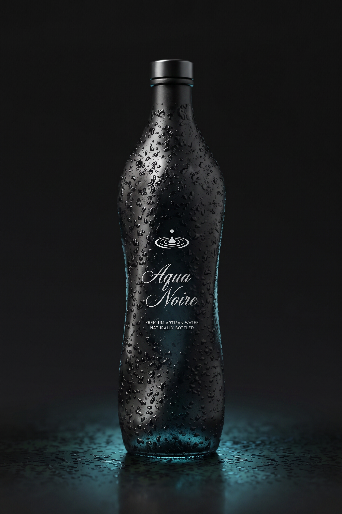
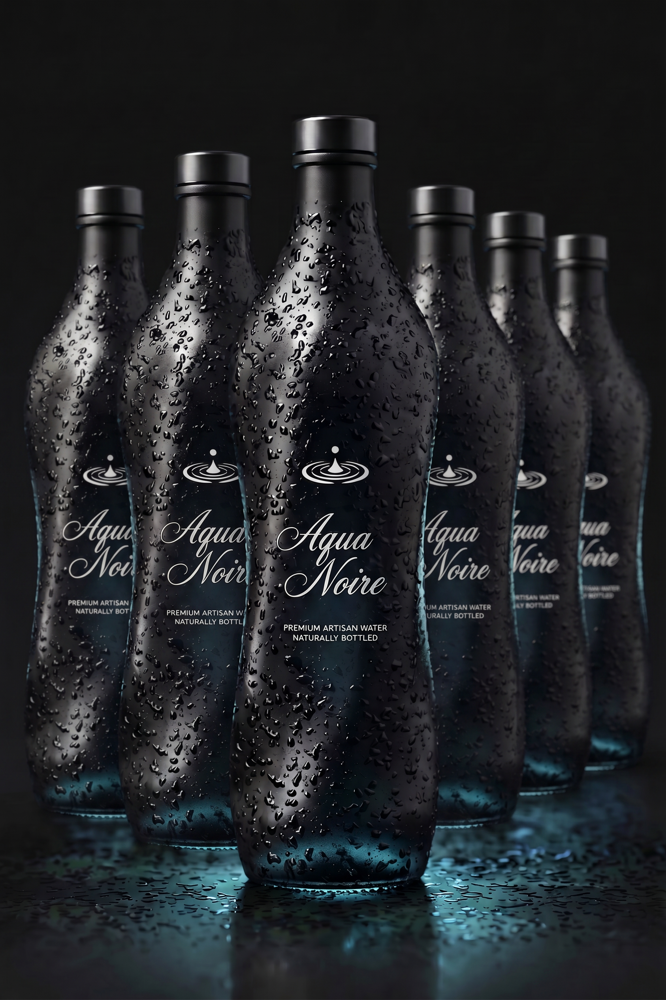
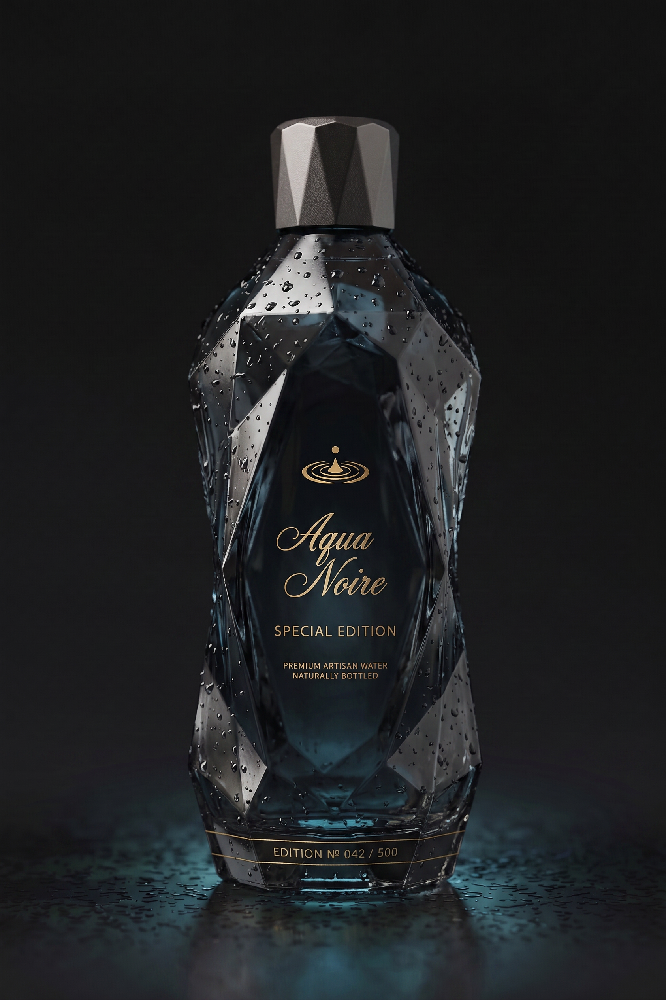
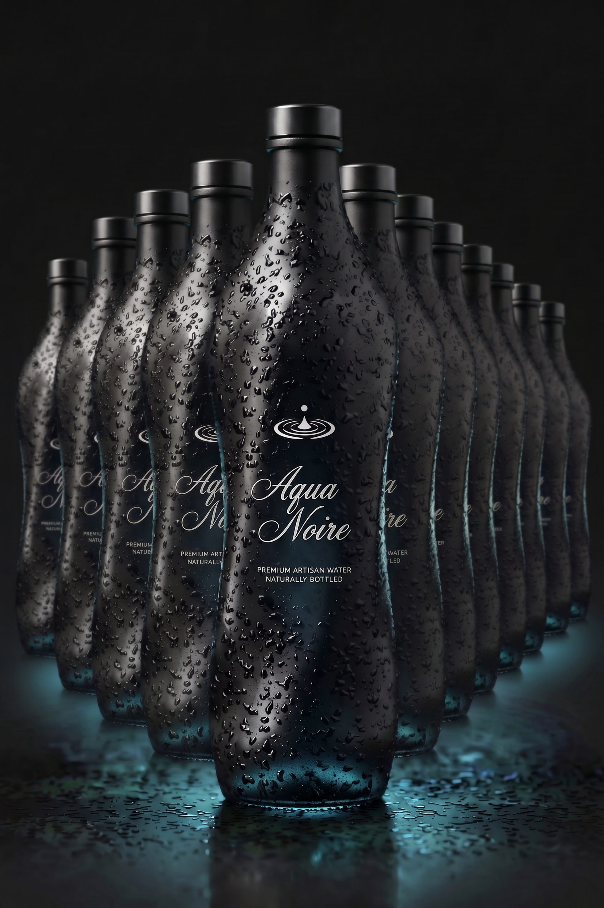

Das Herzstück von Aqua Noire: Unsere Filtersysteme werden kompakt unter der Spüle verbaut und liefern dauerhaft reinstes Trinkwasser – ohne Platzverlust, ohne Aufwand. Alle Systeme sind Made in Germany, BPA-frei und laborgeprüft.
Einstieg in die Aqua Noire Welt. Aktivkohlefilter der ersten Generation – filtert Chlor, Schwermetalle und Geschmacksstoffe zuverlässig heraus.
Unser meistverkauftes System. Filtert zusätzlich Mikroplastik, Medikamentenrückstände und PFAS – für maximalen Schutz im Alltag.
Die Königsklasse. Mit integriertem Sterilfilter, Remineralisierungsstufe und digitalem Filtermonitor – für höchste Ansprüche an Qualität und Komfort.
Original Aqua Noire Filterkerze für alle Modelle. Empfohlener Wechsel alle 6 Monate oder nach 5.000 Litern. Einfacher Wechsel per Hand.

Für besondere Anlässe oder als stilvolle Ergänzung zu Ihrem Alltag: Aqua Noire Premium-Wasser in charakteristischem Mattschwarzen Glas. Jede Edition ist streng limitiert und in handgefertigten Chargen abgefüllt.

Unser stilles Mineralwasser. Mineralisch ausgewogen, weich im Abgang – ideal zu feinen Speisen und ruhigen Momenten.

Sechs Flaschen Aqua Noire Still im eleganten Karton – perfekt als Geschenk oder für den gehobenen Haushalt.

Unsere exklusive Jahrgangsabfüllung – eine besondere Quelle, eine besondere Charge. Jede Flasche mit individueller Nummerierung.

Für Restaurants, Hotels und Events. Zwölf Flaschen Still im professionellen Versandkarton – auf Anfrage auch mit individuellem Label erhältlich.
Aqua Noire vertreibt seine Produkte aktuell ausschließlich auf direktem Anfragewege – ohne automatisierten Online-Checkout. So stellen wir sicher, dass jede Bestellung individuell betreut wird und unsere Qualitätsstandards von Anfang bis Ende eingehalten werden.
Nutzen Sie dafür einfach unsere Service-Seite oder kontaktieren Sie uns direkt per E-Mail. Wir melden uns in der Regel innerhalb von 24 Stunden bei Ihnen – persönlich, nicht automatisiert.